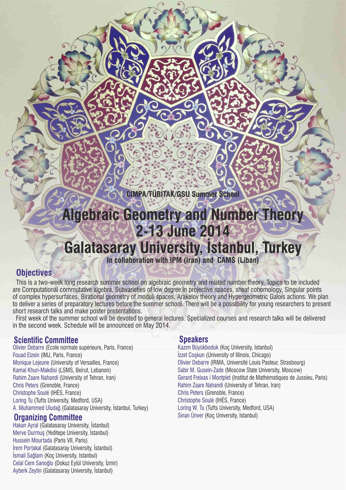

CIMPA/TÜBİTAK/GSU Summer School
Algebraic Geometry and Number Theory
2-13 June 2014
Galatasaray University, İstanbul, Turkey
Objectives
{kind=link}
This is a two-week long research summer school on algebraic geometry and related number theory. Topics to be included are Computational commutative algebra, Subvarieties of low degree in projective spaces, sheaf cohomology, Singular points of complex hypersurfaces, Birational geometry of moduli spaces, Arakelov theory and Hypergeometric Galois actions. We plan to deliver a series of preparatory lectures before the summer school. There will be a possibility for young researchers to present short research talks and make poster presentations.
First week of the summer school will be devoted to general lectures. Specialized courses and research talks will be delivered in the second week. You can find the schedule here.
Some funding will be available for qualified research students coming from the region. See below for details.
Scientific Committee
- Olivier Debarre (Ecole normale supérieure, Paris, France)
- Fouad Elzein (IMJ, Paris, France)
- Monique Lejeune (University of Versailles, France)
- Kamal Khuri-Makdisi (LSMS, Beirut, Lebanon)
- Rahim Zaare Nahandi (University of Tehran, Iran)
- Chris Peters (Université de Grenoble, Institut Fourier, France)
- Christophe Soulé (IHÉS, France)
- Loring Tu (Tufts University, Medford, USA)
- A. Muhammed Uludağ (Galatasaray University, İstanbul, Turkey)
Organizing Committee
- Hakan Ayral (Galatasaray University, İstanbul)
- Merve Durmuş (Yeditepe University, İstanbul)
- Hussein Mourtada (Université de Paris VII, Paris)
- İrem Portakal (Galatasaray University, İstanbul)
- İsmail Sağlam (Koç University, Istanbul)
- Celal Cem Sarıoğlu (Dokuz Eylül University, İzmir)
- Ayberk Zeytin (Galatasaray University, İstanbul)
Speakers
- Kazım Büyükboduk (Koç University, Istanbul)
- İzzet Coşkun (University of Illinois, Chicago)
- Olivier Debarre (Ecole Normale Supérieure, Paris, France)
- Sabir M. Gusein-Zade (Moscow State University, Moscow)
- Gerard Freixas i Montplet (Institut de Mathématiques de Jussieu, Paris)
- Rahim Zaare Nahandi (University of Tehran, Iran)
- Chris Peters (Université de Grenoble, Institut Fourier, France)
Damian Rössler(Institut de Mathématiques de Toulouse)(canceled)- Christophe Soulé (IHÉS, France)
- Loring W. Tu (Tufts University, Medford, USA)
- Sinan Ünver (Koç University, Istanbul)
Lectures
- Rahim Zaare Nahandi (University of Tehran, Iran)
- Olivier Debarre (Ecole Normale Supérieure, Paris, France)
- Loring W. Tu (Tufts University, Medford, USA)
- Sabir M. Gusein-Zade (Moscow State University, Moscow, Russia)
- İzzet Coşkun (University of Illinois, Chicago, USA)
- Christophe Soulé (IHÉS, France) and
- Gerard Freixas i Montplet (Institut de Mathématiques de Jussieu, Paris)
- Sinan Ünver (Koç University, Istanbul)
- Chris Peters (Université de Grenoble, Institut Fourier, France)
- Kazım Büyükboduk (Koç University, Istanbul)
The students should study the prerequisites before the summer school. Since the lectures are very condensed, it may be helpful for the students to study also the references for the lectures ahead of time.
A Brief Introduction to Computational Commutative Algebra
The role of computational methods in algebraic geometry may be compared
with that of computers in dealing with problems in combinatorics.
Computers opened up a tool to settle problems such as the four color
problem which was inaccessible before. Likewise, the computer algebra
systems have provided strong tools to handle questions in the field
which would be inaccessible in the absence of this approach. Algebraic
geometry, even in its abstract sense of scheme theory, is basically the
study of ideals generated by polynomials over a field. The Gröbner
Bases Theory, the main idea in computational methods, descends the
study of polynomial ideals to the study of monomial ideals. The
structure of monomial ideals have combinatorial nature and, in most
cases, the original question on polynomial ideals, is much easier to
handle for monomial ideals. Groebner Bases Theory has wast applications
in several branches of mathematics and hence, it is important for
working mathematicians to get familiar with this useful theory.
The aim of the course in this CIMPA program, is to introduce the main
techniques in the subject, the so called Gröbner Basis. These include,
monomial orders, Gröbner bases, the division algorithm, Buckberger
criterion and Buchberger algorithm, comparisons of an ideal and its
initial ideal in the ring of polynomials, elimination of variable,
intersection of ideals (and, generic initial ideals if time permits).
These topics could well be accompanied by problem sessions working with
systems of computer algebra such as CoCoA and SINGULAR.
You can find the lecture notes here.
Prerequisites: The website of RISC is a very useful source the
participants could visit: http://www.risc.jku.at/Groebner-Bases-Bibliography/. This
website contains a list of several books and surveys on Groebner Bases which are
certainly beyond this introductory course. However, a few chapters of the following
books (or chapters on Groebner Bases) will be very helpful.
- An Introduction to Gröbner Bases (W. Adams, P. Loustaunau)
- An Introduction to Gröbner Bases (R. Froeberg)
- Commutative Algebra (D. Eisenbud)
- Computational Commutative Algebra 1 (M. Kreuzer, L.
Robbiano)
- Gröbner Bases (T. Becker, V. Weispfenning, Heinz Kredel)
- Ideals, Varieties, and Algorithms (D. Cox, J. Little, D.
O'Shea)
It is assumed that the participants are familiar with the use of polynomial ideals,
operations on ideals, and quotient rings of the ring of polynomials in several
variables.
On the geometry of subvarieties of low degree in the
complex
projective space
The study of the geometry of subvarieties of the complex projective
space defined by homogeneous equations of low degrees (and in
particular, hypersurfaces, which are defined by one such equation) is a
very classical subject. For example, the fact that a smooth cubic
surface contains 27 lines was first discovered by Cayley in a 1869
memoir. In another direction, some of these varieties have long been
known to be unirational (i.e., parametrizable in a generically
finite-to-one fashion by a projective space of the same dimension), but
it is only in the 1970s that they were proved not to be rational (i.e.,
parametrizable in a generically one-to-one fashion by a projective
space of the same dimension). Still today, nobody knows any example of
a smooth non rational cubic hypersurface of dimension 4. Nowadays, a
lot of information has been gathered on this very rich circle of
questions. I will illustrate this still very active domain of research
by treating in some detail a few examples.
Prerequisites: TBA
Sheaf Cohomology
Since their introduction by Leray, Cartan, and Serre in the forties and
fifties, sheaves and their cohomology have been an extremely useful
tool in topology, complex analysis, and algebraic geometry. One can
even say that they are indispensable in modern algebraic geometry. The
purpose of this course is to introduce students to some of the powerful
techniques in sheaf cohomology not usually taught in a standard course
on algebraic geometry. We will discuss four types of cohomology
theories---sheaf cohomology in terms of resolutions, Čech cohomology of
a sheaf, hypercohomology of a complex of sheaves, and Čech cohomology
of a complex of sheaves, the relations among them, and how to compute
them using spectral sequences. As evidence of their power and
versatility, we deduce the Dolbeault theorem, the classical (smooth) de
Rham theorem, the analytic de Rham theorem, and as the pièce de
résistance, Grothendieck's algebraic de Rham theorem.
Prerequisites: Manifolds and differential forms
and the very basics of Algebraic geometry: affine and projective varieties, regular
functions on varieties.
References for the prerequisites:
Igor R. Shafarevich, Basic Algebraic Geometry,
vol. 1, 2nd ed., Sections 1 through 4, pp. 1--52.
Loring W. Tu, An Introduction to Manifolds, second edition, Universitext, Springer, New
York, 2011.
References for the lectures:
Loring W. Tu, Introduction to sheaves, 8 pages.
Fouad El Zein and Loring W. Tu, From sheaf cohomology to the algebraic de Rham theorem,
Chapter 2, in Hodge Theory, Princeton University Press, 2014, pp. 69--121. Available at
http://arxiv.org/abs/1302.5834
Singular points of complex
hypersurfaces
1. Singular points of complex hypersurfaces and critical points of
holomorphic functions. Classifications of germs of holomorphic
functions: right, right-left, Modality of a germ. List of simple
(0-modal) germs.
2. Milnor fibre of a germ of a holomorphic function, Milnor fibration.
Milnor Theorem about the homotopy type of the Milnor fibre of a germ
with an isolated critical point. Milnor number of a germ of a
holomorphic function. Classical monodromy transformation of a germ,
monodromy group.
3. Deformations of germs of holomorphic functions, versal deformations.
Miniversal deformation of a germ of a holomorphic function.
Bifurcation diagrams of zeroes and functions of a singularity.
4. Resolution of a germ of a holomorphic function. Hironaka Theorem
about the existence of a resolution. A'Campo formula for the Milnor
number and the zeta-function of the classical monodromy transformation
of a germ of a holomorphic function in terms of a resolution.
Quasi-unipotency of the classical monodromy operator of a germ.
Prerequisites: TBA
Birational Geometry of Moduli Spaces
I will discuss recent progress in understanding the birational geometry
of several important moduli spaces, including the moduli spaces of
curves, Kontsevich moduli spaces of stable maps and Hilbert schemes of
points on the plane. After introducing the necessary background from
birational geometry, I will discuss the cone of ample and effective
divisors, the stable base locus decomposition of the effective cone and
the corresponding birational models.
Prerequisites: TBA
Théorie d'Arakelov
Arakelov geometry is a combination of algebraic geometry of schemes and
analytic complex geometry. Given a variety X over the integers, one
studies hermitian vector bundles over X. Characteristic classes are
defined for these, and a Riemann-Roch theorem is proved. Applications
include equidistribution results of Galois orbits and computations of
the periods of some CM motives.
Prerequisites:
The lectures will cover generalities on arithmetic intersection theory and
characteristic classes.
References:
- Chapters II, III and IV of "Lectures on Arakelov geometry" (Cambridge University
Press) by Christophe Soulé. (Do not try to read in detail Chapter I, it is too
technical.)
- "Principles of Algebraic geometry" by Griffiths and Harris. Chapter 0, sections
1,2,4,5,6, Chapter 1, section 1, and Chapter 3, sections 1,2,3
are especially relevant.
Arakelov Geometry on Arithmetic
Surfaces
Arakelov Geometry is a way of completing the
integers by introducing metrics at infinity so as to
be able to define degrees of (metrized) line bundles on arithmetic
schemes. In this series of talks I will try to
explain the most basic situation in the case of arithmetic surfaces.
The theory had applications in the proofs
of the Tate and Mordell's conjectures and results on
th eequidistributions of points on abelian varieties. If time permits I
will try to give an overview of some of
these results.
Prerequisites: TBA
Lectures on motivic aspects of
Hodge theory
1) Introductory lectures on classical Hodge theory (Hodge
decomposition,
Lefschetz decomposition for cohomology of Kaehler manifolds).
2) Mixed Hodge theory and singular varieties. The motivic Hodge
characteristic.
3) Mixed Hodge theory of degenerations. The motivic nearby fibre.
4) Possible further subjects: motivic Chern classes, periods and
motives (work of Belkale and Brosnan), Chow-motives etc.
Prerequisites: The course of Loring Tu, some basic knowledge of
algebraic topology: homology and cohomology (ring structure), definition and first
properties of Hodge theory. This will also be recalled during the first lecture. No
previous knowledge of mixed Hodge theory needed.
Useful to have around during the school for back-up material:
1. Carlson, Müller-Stach, Peters: Period mappings and period domain, Cambridge Univ.
Press.
2. Griffiths & Harris, "Principles of Algebraic Geometry.”
3. Voisin: Hodge theory and complex algebraic geometry I, II. Cambridge Univ. Press.
My goal is to treat the first half of the lecture notes which can be
found here
Arithmetic of Abelian varieties and Iwasawa
theory.
A theorem of Faltings says that that an abelian variety defined
over a number field is determined (up to isogeny) by its $p$-adic Tate module (which is
a free $\mathbb{Z}_p$-module of finite rank, on which the absolute Galois group acts),
for any prime $p$. This is one way of realizing the central importance of Galois
representations in Number Theory. It turns out that one can place these objects in
$p$-adic families and study the variation of the arithmetic data they encode. This is
essentially the main idea behind Iwasawa theory of Galois deformations. This approach
has proved immensely useful and has lead to some of the most spectacular advances in
Mathematics: Wiles' (and Taylor-Wiles') proof of the Taniyama-Shimura conjecture,
Buzzard-Taylor's proof of the strong Artin conjecture for $GL_2$ over $\mathbb{Q}$,
Taylor's proof of the Sato-Tate conjecture and Kisin's proof of Fontaine-Mazur
conjecture for $GL_2$ has relied on the understanding deformations of Galois
representations of various kind.
In this series of talks, I will discuss the following themes along these lines:
0- Examples of a variety of results proved using Galois deformations.
1- Gauss' conjecture on the ideal class groups of quadratic fields and the rather
erratic "horizontal" behavior.
2- Galois deformations and the universal deformation ring.
3- Iwasawa's theorem on the behavior of the class groups along the cyclotomic tower and
classical Iwasawa theory (= study of the universal deformations of characters).
4- Modular Galois representations, the eigencurve and the infinite fern of Gouvea-Mazur.
Prerequisites: 1- A solid understanding of the basic theory of elliptic
curves might be very helpful, in the level of Silverman's book. At least familiarity
with all the objects that appear in the statement of Birch and Swinnerton-Dyer
conjecture would be helpful.
2- Mazur, Barry. Rational points of abelian varieties with values in towers of number
fields. Invent. Math. 18 (1972), 183–266. [Just the introduction would provide a good
motivation.]
3- http://www.math.washington.edu/~greenber/Park.ps
[These are excellent introductory notes to "Iwasawa theory of Elliptic Curves"]
Program
| Monday | Tuesday | Wednesday | Thursday | Friday | Saturday | |
| 02.06.14 | 03.06.14 | 04.06.14 | 05.06.14 | 06.06.14 | 07.06.14 | |
| 10:00 – 11:00 | Rahim Zaare Nahandi Introduction to Computational Commutative Algebra |
Sinan Ünver Arithmetic Schemes and Arakelov Theory |
Loring Tu Sheaf Cohomology |
Olivier Debarre Geometry of subvarieties |
Christophe Soulé - Gerard Freixas i Montplet Arakelov theory |
Sabir M. Gusein-Zade Singular points of complex hypersurface |
| 11:00 – 11:30 | Break | Break | Break | Break | Break | Break |
| 11:30 – 12:30 | Loring Tu Sheaf Cohomology |
Loring Tu Sheaf Cohomology |
Sinan Ünver Arithmetic Schemes and Arakelov Theory |
Chris Peters Motivic Aspects of Hodge Theory |
Olivier Debarre Geometry of subvarieties |
Chris Peters Motivic Aspects of Hodge Theory |
| LUNCH | LUNCH | LUNCH | LUNCH | LUNCH | LUNCH | |
| 14:00 – 15:00 | Sinan Ünver Arithmetic Schemes and Arakelov Theory |
Rahim Zaare Nahandi Introduction to Computational Commutative Algebra |
Rahim Zaare Nahandi Introduction to Computational Commutative Algebra |
Sabir M. Gusein-Zade Singular points of complex hypersurface |
İzzet Coşkun Birational Geometry of Moduli Spaces |
Sabir M. Gusein-Zade Singular points of complex hypersurface |
| 15:00 – 15:30 | Break | Break | Break | Break | Break | Break |
| 15:30 – 16:20 | Rahim Zaare Nahandi Introduction to Computational Commutative Algebra |
Kazım Büyükboduk Arithmetic of Abelian varieties and Iwasawa theory | Kazım Büyükboduk Arithmetic of Abelian varieties and Iwasawa theory | İzzet Coşkun Birational Geometry of Moduli Spaces |
Sabir M. Gusein-Zade Singular points of complex hypersurface |
Loring Tu Sheaf Cohomology |
| 16:30 – 17:30 | Afternoon Sessions |
Afternoon Sessions |
TBA | Afternoon Sessions |
Afternoon Sessions |
TBA |
Application
The application is now closed for all participants.
Registration Fee
For non-local participants not supported by CIMPA, there will be a
non-mandatory registration fee for the conference, to be paid directly
to CIMPA, during the registration. For local participants there will be
a fee of 50€ to be paid on arrival.
Help
When you need a help, please contact with the organizing committee.
Hotel Info
The official hotels of the workshop are Harem Hotel and Yeni Saray Hotel. (subject to change) In case you prefer a more comfortable stay, you may make your own hotel reservation, preferrably in the quarters of Galata, Cihangir, Beşiktaş, Ortaköy or Üsküdar.
- Harem Hotel
(***)
Address: Ambar Sokak, No:2 Selimiye 34668 Istanbul - TURKEY
Phone: +90 (216) 310 68 00 Fax: +90 (216) 334 77 30
web: http://www.haremhotel.com/en/ E-mail: info@haremhotel.com
Room prices: TBAHarem hotel has 100 rooms. All of its rooms are equipped with satellite TV, individual air conditioner and central heating, WC, shower cabin, hair dryer, mini bar (stuff inside the mini bar is not included to room price), wi-fi, phone. Breakfast is an open buffet and its bar is 7/24 open and there is also a Laundry, meeting room, generator. In addition, there are a swimming pool, Turkish Bath and Sauna (steam room), and these are free. This hotel is near the Harem otogar and Harem-Sirkeci ferry port, and at 30 minutes walk-distance to Üsküdar. Between Harem hotel and Üsküdar either you can walk along seaside or take a dolmuş (or taxi). But if you have time, it is suggested to walk along seaside, near the maiden's tower you can give a tea break. To learn the location of Harem hotel and some other important places you can use this interactive googlemaps.
How to go to Harem Hotel from Atatürk airport?: there are 3 or more ways:
* First and easist way, of course taking a taxi to Harem, it will cost ~80TRY (1,5 hour). Especially prefer this way after midnight, beacuse you may not find a ferry or a tram after midnight.
* Second way, get on a Metro at the Ataturk airport and change it to tram at Zeytinburnu. Get off from the tram at Sirkeci. Then get on a ferry from Sirkeci to Harem and cross the sea (To ceheck the Sirkeci-Harem ferry schedule, please click here). When you reach the Harem ferry port, on the top of hill you will see the Harem hotel, walk up to there.
* Third, if you miss the Sirkeci tram station or in that hour if there is no ferry from Sirkeci to Harem, you can get on a ferry/boat either from Eminönü or Karaköy or Beşiktaş to Üsküdar. Then, get on a dolmuş from Üsküdar to Harem, and get of near the Harem Otogar, or take a taxi.
* Fourth, get on a Metro at the Atatürk airport and change it to tram at Zeytinburnu. Get off from the tram at Sirkeci. Then change to Marmaray train which travels under the Bosphorus strait to Üsküdar. Then get on a dolmuş from Üsküdar to Harem and get of near the Harem Otogar, or take a taxi. You can find the detailed map of trams and metros here.How to go to Harem hotel from Sabiha Gökçen airport?: there are 2 ways:
* First and easist way, of course taking a taxi to Üsküdar, it will cost ~70TRY (1 hour).
* Second but cheapest way, havataş shuttles. Get on a havataş shuttle to Kadıköy (12 TRY, check the shuttle schedule from here), and then take a taxi to Harem (10 TRY).How to go to Galatasaray University from Harem hotel?
First walk down up to main street, then get on a dolmuş to Üsküdar (if you are four people, you can take a taxi, it will totally cost cheaper than dolmuş's.) and get off at Üsküdar. Probably the driver will drop you before ferry port. Do not worry, just follow the crowd (If you have time, it is suggested to walk along the seaside to Üsküdar from the hotel (30 minutes), you will have great times). Get on a ferry/boat from Üskdar to Beşiktaş and cross the Bosphorus (you will really enjoy this trip). When you arrive to Beşiktaş, walk 15 minutes along Çırağan street (the main street parallel to the sea) in the direction of Ortaköy, then you will see the main entrance of the university on the right. - Yeni Saray
Hotel (**)
Address: Selmanipak Caddesi, Çeşme Sokak, No:31, Üsküdar, Istanbul - TURKEY
Phone: +90 (216) 553 07 77 / 334 34 85 Fax: +90 (216) 334 56 55
web: http://www.yenisarayotel.com/english.index.html E-mails: info@yenisarayotel.com / yenisarayhotel@yahoo.com
Room prices: TBAYeni Saray hotel has 39 rooms. All of its rooms are equipped with satellite TV, individual air conditioner and central heating, WC, shower cabin, hair dryer, mini refrigerator (drinks inside of the refrigerator is not included to room price), wi-fi, phone. There is a bar and Laundry. This hotel is at the center of Üsküdar, near the Kanaat Lokantası (Kanaat Restaurant) and at 5 minutes walk distance Üsküdar-Beşiktaş ferry port. To learn the location of Yeni Saray hotel and some other important places you can use this interactive googlemaps.
How to go to Yeni Saray hotel from Atatürk airport?: there are 3 or more ways:
* First and easist way, of course taking a taxi to Üsküdar, it will cost ~80TRY (1,5 hour). Especially prefer this way after midnight, beacuse you may not find a ferry or a tram after midnight.
* Second but cheapest way, get on a Metro at the Ataturk airport and change it to Tram at Zeytinburnu. Get off from the tram at Eminönü. Then get on a ferry from Eminönü to Üsküdar and cross the sea (the last ferry is at 23:00, to check the winter-time schedule of the Eminönü-Üsküdar ferry, please click here). Then ask some one the Yenisaray Hotel (or its nextdoor the Kanaat Restraunt).
* Third, if you are using Havaş shuttles, first you will come to Taksim, then either get on a bus or take a taxi to Beşiktaş, and then get on a ferry to Üsküdar (after midnight there is no ferry from Beşiktaş to Üsküdar).
* Fourth, get on a Metro at the Atatürk airport and change it to tram at Zeytinburnu. Get off from the tram at Sirkeci. Then change to Marmaray train which travels under the Bosphorus strait to Üsküdar. You can find the detailed map of trams and metros here.How to go to Yeni Saray hotel from Sabiha Gökçen airport?: there are 2 ways:
* First and easist way, of course taking a taxi to Üsküdar, it will cost ~70TRY (1 hour).
* Second but cheapest way, havataş shuttles. Get on a havataş shuttle to Kadıköy (12 TRY, check the shuttle schedule from here), and then either get on a Kadıköy-Üsküdar bus (12a), or take a taxi. The last stop of the buss is at walk distance to hotel.How to go to Galatasaray University from Yeni Saray hotel? : First walk 5 minutes up to Üsküdar-Beşiktaş ferry port, there are private ferries near the park (they are more confortable, same price, and there is a ferry per 15 minutes). Get on a ferry from Üsküdar to Beşiktaş. When you arrive to Beşiktaş, walk 15 minutes along the Çırağan Street (the main street paralel to the sea) in the direction of Ortaköy, the main entrance of the university is on the right. You may practice this interactive googlemaps.
- La Maison(***):
Address: Muvezzi Cad. No:63, 80700 Çırağan, Beşiktaş, İstanbul_TURKEY
Phone: + 90 (212) 227 42 63 Fax: +90 (212) 258 87 29
Web: http://www.lamaison.com.tr E-Mail: mail@lamaison.com.tr
Room prices: TBALa Maison hotel has 34 rooms. All of its rooms are equipped with satellite TV, individual air conditioner and central heating, WC, shower cabin, hair dryer, mini bar (stuff inside the mini bar is not included to room price), wi-fi, saffety box. There is a bar, laundry, meeting room, generator and Otopark.
La Maison Hotel is at 20 minutes walk distance from the Galatasaray University. To learn how you can go to the La Maison hotel, please read the paragraph answering the question
How to reach Galatasaray University? which is in the Useful info part of this page. Keep in mind that, Müvezzi street is near the 5-star luxiruous hotel, named Çırağan Hotel Kempinski which is a part of the Çırağan Palace, starts near from the bus stop and goes up (250 m) along the Yıldız Park. (At the beginning of the Müvezzi street, on the left side there is an old hotel, named Çırağan hotel, and on the right side there is a Yıldız park with high walls. If you saw these, you are on the right street.) If you walk 7-8 minutes along the Müvezzi street, on the top of hill you will see La Maison hotel. You may practice on this interactive googlemaps.If you are planning to stay at La Maison hotel, please make your own reservation from its webpage or contacting them via e-mail: mail@lamaison.com.tr. Since La maison hotel is quite confortable, it will be much more expensive comparing to the Harem Hotel and Yeni Saray hotel.
- SED Hotel (**)
Address: Ömer Avni Mah. Besaret Sk. No:14 Ayaspaşa 80040 İstanbul - TURKEY
Phone: +90 (212) 252 27 10 / Fax: +90 (212) 252 42 74
web: http://www.sedhotel.com/ E-mail: info@sedhotel.com
Room prices: TBASED hotel has 50 rooms. All of its rooms are equipped with satellite TV, individual air conditioner and central heating, WC, shower cabin, hair dryer, mini refrigerator (stuff inside the refrigerator is not included to room price), wi-fi, phone. There is a bar and Laundry. To learn the location of SED hotel and some other important places you can use this interactive googlemaps.
If you take a taxi from Atatürk airport, give the adress to driver, Probably he knows the hotel. In any case keep in mind that this hotel closed to both of Kabataş tram station (if driver is near the kabataş) and AKM building and German consulate (if driver is near Taksim, this sketch will be useful).
There is another way to SED hotel from Atatürk airport. Get on the Metro at airport and change to Tram at Zeytinburnu. The last stop of tram is Kabataş. Then ask some one the place of SED otel. Do not forget, after midnight there is no Metro and Tram. Third way, take a Havaş shuttle from airport to Taksim, and then either walk or take a taxi to SED hotel. You may practice on this interactive googlemaps.
{kind=link}
{kind=link}
Useful Info
- How to reach Galatasaray University?:
Galatasaray University is 24 km away from the İSTANBUL ATATÜRK AIRPORT. Right in front of the exit door of the Ataturk International Airport, take the HAVATAŞ bus to TAKSİM (40 mn, 10 TRY) and get off at the last stop, TAKSIM SQUARE (for detailed information about HAVATAŞ buses please visit http://havatas.com/en/coach.aspx?i=1 ). Then either take a taxi (15mn, ~15 TRY), or take a bus and get off at the stop Galatasaray University. The number of busses are: 40 (Taksim - Sarıyer), 42T (Taksim - Bahçeköy), 40T (Taksim - İstinye - Dereiçi), DT1 (Taksim - Ortaköy Dereboyu), DT2 (Taksim - Ortaköy Dereboyu).
Second possibility, from İstanbul Atatürk Airport to Galatasaray University is taking a taxi (45 mn, ~70 TRY).
Finally, you may take the metro from İstanbul Atatürk Airport and change to tramway at the Zeytinburnu station. Get off at the last stop in Kabataş. From Kabatas taxi costs 8 TRY, there are also regular buses (get on the bus going to Ortaköy direction).
If you are coming from Sabiha Gökçen Airport, take the HAVATAŞ bus to TAKSİM (~1.5 hr, 17 TRY) (for more detailed information, please visit http://havatas.com/en/coach.aspx?i=2 ).
Keep in mind that, Atatürk Airport is more closer than Sabiha Gökçen Airport to the Galatasary University.
- Local Information:
Galatasaray University is at 10-15 minutes by walk from both Beşiktaş and Ortaköy. If one wants to take a bus to University, he/she can take any bus working on the shore (for example, the number of busses from Kabataş: 22, 22RE, 25E; from Ortaköy: 40, 40T, 42T, DT1, DT2).
The best way to reach Galatasaray University from Anatolian side of the city is to take a boat to Beşiktaş from Kadıköy or Üsküdar.
For Metro, Tram, Ferry 9and Busses either you can use Akbil (1.95 TRY per trip, and you can charge your Akbil Card) or use tickets (1 ticket: 4 TRY, 2 ticket: 7 TRY, 3 ticket: 10 TRY, 5 ticket: 15 TRY, 10 ticket: 28 TRY).
- Time Schedule of IDO Ferries: http://sehirhatlari.com.tr/en
- Istanbul Rail Network Map http://www.istanbul-ulasim.com.tr/media/8540/erisim_2200px_1546px-01.jpg
- Bank Services:
In general Banks are open between 8:30 - 17:30 from Monday to Friday.
- Currency:
he currency in Turkey is Turkish Lira (TRY). Actually 1 US $ = 1.95 TRY and 1 Euro = 2.60 TRY (August 20, 2013)
- Drinking Water:
Although it is safe to drink tap water, it is recommended to buy bottled drink water which can be found almost everywhere at stores. There are several supermarkets in Beşiktaş which is 15 minutes on walk from GS University. You can safely brush your teeth with tap water.
- Electricity:
The electricity supply is 220 V, 50 Hz, with the type of sockets which are standard in most European countries.
- Language:
In Turkey the official language is Turkish. The Turkish language comes from Central Asian Languages Family and very different from the european languages. The Turkish alphabet is based on the latin alphabet. In general, in Istanbul many people talk English and you can easily communicate with other people. As İstanbul is a touristic city you can find many tourism offices.
- Phone Information:
As it belongs to two continents in İstanbul there are two geographical regions : European and Asian sides. The local telephone code of European side is 212 and the one of the Asian side is 216. The national telephone code of Turkey is 90. All of the telephone numbers consist of 7 digits. For example telephone number of Galatasaray University is 2274480 and the code of the European side is 212. So if you want to call Galatasaray University from Asian side the number transforms into 0 212 2274480. If you want to call the same number from abroad it transforms into 00 90 212 2274480. There are prepayed telephone cards of Turkish Telecom specially designed for calling abroad.
- Shopping:
Almost all of the shopping centers are open every day until 22:00 hours.
- Safety:
Beware of dangerous and inconsiderate driving, especially when crossing roads. Even if you are on a pedestrian crossing, look carefully before crossing. Turkey is a comparatively safe country as far as crime is concerned, but it is best to take reasonable precautions against pickpockets in crowded areas.
- Time Zone:
The time zone is 1 hour later from Central European Time Zone, 2 hours later from the Greenwich Mean Time.
- Visa information for foreigners (general):
http://www.mfa.gov.tr/visa-information-for-foreigners.en.mfa"
{kind=link}
© GSÜ Math. Tüm hakları saklıdır.